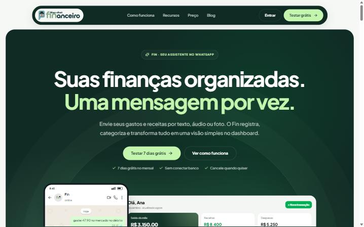
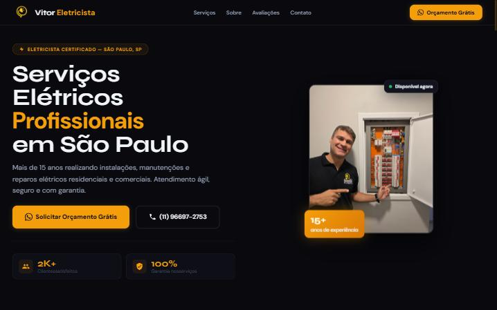

Sistemas web que saem do papel e vão para produção.
Full Stack Developer · São Paulo, Brasil
Disponível para projetos
Sou desenvolvedor full stack especializado em sistemas e plataformas web escaláveis, de ERPs a produtos SaaS em produção.
Gosto de cuidar do ciclo inteiro: entender o problema, modelar os dados, entregar a interface, colocar no ar e manter funcionando.
Projetos
Produtos
-
Assistente financeiro com IA pelo WhatsApp. O usuário registra gastos por texto, áudio ou foto e acompanha tudo em um dashboard com metas, orçamentos, fluxo de caixa e relatórios.

Sites
-
Site institucional de uma produtora de eventos corporativos, shows e audiovisual. HTML, CSS modular e JavaScript puro, com imagens em WebP e animações de scroll.

-
Julia Personal
2026Landing page de consultoria de treino e nutrição, focada em performance, SEO e conversão. Componentes Astro, dados estruturados e animações sem bibliotecas externas.

-
Redesign conceitual, mobile-first, de um site de dermatologia clínica, com calendário de agendamento interativo inspirado no Cal.com.
-
Site de serviços elétricos em São Paulo com páginas regionais, SEO local completo (schema LocalBusiness, sitemap) e instalação como PWA.

-
Hayashi Sushi
2026Site para restaurante de culinária japonesa.

Sistemas
-
Gestão de academia com 4 microsserviços Spring Boot, comunicação REST e Kafka, um PostgreSQL por serviço, app Flutter, CI/CD no GitHub Actions e monitoramento com Prometheus e Grafana.
-
Sistema especialista para diagnóstico de hardware, com interface Streamlit e backend Flask, hospedado na AWS com EC2 e S3.
-
Dois microsserviços de pagamento com comunicação síncrona, usados para simular falhas e timeouts entre serviços em Docker.
Stack
- Backend
- Laravel, PHP, Node.js, TypeScript, Python
- Frontend
- React, Next.js, Astro, Tailwind CSS
- Dados
- PostgreSQL, MySQL, Supabase, NoSQL
- DevOps
- Docker, GitHub Actions, n8n, VPS, AWS
Formado em Análise e Desenvolvimento de Sistemas pelo IFSP. Certificações AWS Academy, Cisco e Alura.
Contato
Tem um projeto? Vamos conversar.